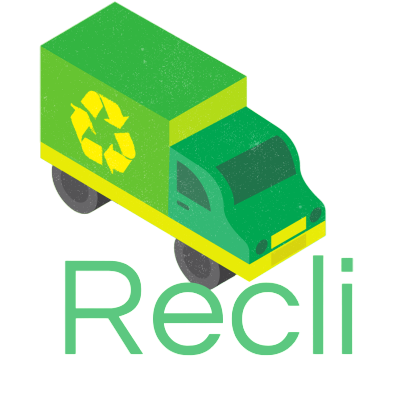

Em nossas vidas diárias, muitas vezes, as coisas mais simples podem escapar da nossa atenção. Uma delas
é a coleta de lixo. No entanto, a coleta de lixo é uma parte essencial da manutenção de nossas casas e da preservação
do meio ambiente. É por isso que apresentamos o Recli,o aplicativo de lembretes inteligentes para coleta de lixo.
O Recli é uma solução inovadora que ajuda você a lembrar exatamente quando o caminhão
de lixo passará na sua casa e até mesmo fornece um alerta amigável um dia antes da coleta. Este aplicativo
foi projetado para tornar a gestão de resíduos mais fácil e eficiente, garantindo que você nunca mais perca
o horário da coleta de lixo.
O Recli é uma solução inovadora que ajuda você a lembrar exatamente quando o caminhão
de lixo passará na sua casa e até mesmo fornece um alerta amigável um dia antes da coleta. Este aplicativo
foi projetado para tornar a gestão de resíduos mais fácil e eficiente, garantindo que você nunca mais perca
o horário da coleta de lixo.